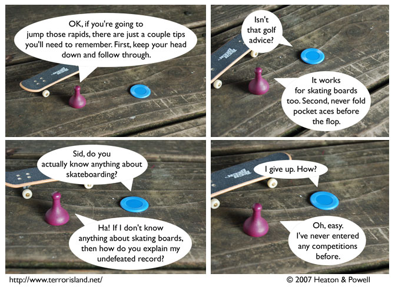

Strip #243
— Monday, December 31, 2007
Do not email the creators of this strip to complain about the poker advice. It is better than you realize.
Notes, Thoughts, &c.
Ben’s Notes
This is our last comic for 2007. I think it’s worth taking a moment to reflect on how Terror Island has changed over the course of this year.
In 2007:
- Gibbs and Lockley got fired
- Sid wrote a childrens’ book
- Jame and Liln went to Bizarro Aorist’s backyard on a date
- Sid entered Jame in a skating board contest
- The Green Grocer started treating Waiterman like a superhero
- Aorist was killed
- Canadian Thanksgiving
- Sid, Stephen, and York went to the moon
- We started using tensed logic to indicate hypothetical futures, not just flashbacks
- Gunpowder stopped being Jame’s stunt double
- The actor who played Omicron passed away
- Jame’s surprise birthday party
- Stephen was up for re-election as Czar, and lost to Blueteen
- Sue narrowly avoided being sentenced to community service
- Bartleby appeared twice
Not necessarily in that order, though. Read through from the beginning of 2007 if you want to review which events took place before which other ones.
Lewis’s Notes
Speaking of webcomics that mention poker, why not go read +EV? It’s a webcomic about poker.
I wrote Lewis’s comments today. -Ben